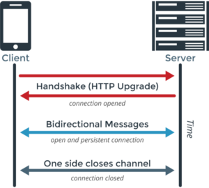
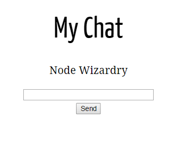

class: center,middle Brujería con Node.js ==================== _Andrés Ortiz Corrales_ - _@demiurgosoft_   --- ## Agradecimientos * **Oficina de Software Libre (UGR)**: <https://github.com/oslugr> * **Alpha-Bug**: <https://github.com/Alpha-Bug> * **Beer.js Granada**: <https://github.com/beerjs/granada> ??? Me salto quien soy :D --- ## <center> Qué es Node.js? </center> ??? * Entorno de ejecución de JS * Usado para servers * 2 ideas principales: * Javascript * Asíncrono (no bloqueante) -- count:false * ### Javascript * Un único lenguaje (cliente-servidor) * Eficiente (Google V8) -- count:false * ### Asíncrono (a.k.a. callback hell) * Eliminar esperas I/O y aprovechar recursos * Tiempo real --- class: center,middle  ??? Async vs sync --- class:center,middle # Taller: MyChat _Small chat service_ <https://github.com/demiurgosoft/brujeria-con-node/> --- ## Primeros pasos **Instalar node (debian/ubuntu)** * **Version 0.12** * `sudo apt-get install nodejs` * **Version 4.2.2 (LTS)** * `curl -sL https://deb.nodesource.com/setup | sudo bash -` `sudo apt-get install nodejs` **Windows (4.2.2/5.0)** Descargar instalador: * 4.2.2 (LTS): <https://nodejs.org/en/download/> * 5.0 (stable): <https://nodejs.org/en/download/stable/> ---- * `node --version` * Si npm no se encuentra instalado `sudo apt-get install npm` --- ## Primeros pasos **Crear Proyecto** * `npm init` en la raíz del proyecto para generar _package.json_ * Los campos se rellenerán automáticamente si es posible * **License**: GPL-3.0,ASC,MIT... * Podemos editar algunos campos manualmente ``` -myChat/ |-package.json |-server.js |-README.md |-app/ |-"funny code here" |-config/ |-"boring code here" |-node_modules/ |-"dependencies" |-test/ |-"testing code here" |-public/ |-"server resources here" ``` _Ejemplo de un proyecto en Node.js_ ??? * Repositorio github (repository,web,bugs...) * No es necesario server.js, puede llamarse index,app o lo que sea --- ## Primeros pasos ```Json { "name": "mychat", "version": "0.1.0", "description": "This is my description", "main": "server.js", "scripts": { "test": "echo \"Error: no test specified\" && exit 1", "start": "node server.js" }, "author": "demiurgosoft <demiurgosoft@hotmail.com>", "license": "MIT", "repository": { "type": "git", "url": "git+https://github.com/demiurgosoft/mychat.git" }, "bugs": { "url": "https://github.com/demiurgosoft/mychat/issues" }, "homepage": "https://github.com/demiurgosoft/mychat#readme" } ``` _Ejemplo de package.json_ ??? package.json --- ## Primeros pasos: Hello Chat ```Javascript var express = require("express"); //"loads" express framework library var app = express(); //new express app (some magic here) var http = require('http').Server(app); //http server using app //what happens with a get request to our server? app.get('/', function(req, res) { //this function is a magical callback //req is the request info, response is used to send our funny stuff res.send("Hello Chat"); }); //server starts listening to port 9090 http.listen(9090, function() { //Another magical callback console.log("Magic happens in port 9090"); }); ``` _server.js_ **express**: Framework para la creación de servidores en Node.js ¿Dónde está la libreria express? ??? * **express** * callback --- ## Primeros pasos: Instalando dependencias **npm** (_Node Package Manager_) nos permite gestionar nuestras aplicaciones de Node.js y sus dependencias ¿Necesitamos express? ¿Tenemos un _package.json_? * `npm install --save express` * npm install instalará express en _node_modules_ automaticamente * La opción --save añadriá a _package.json_ la libreria express como dependencia y su versión, lo que nos permitirá instalarlo con `npm install` cuando queramos ```Json "dependencies": { "express": "^4.13.3" } ``` --- ## Primeros pasos: Ejecutar el ejemplo * `node server.js` Ejecutará nuestro servidor de ejemplo: ``` $ node server.js Magic happens in port 9090 ``` * Desde cualquier navegador: `localhost:9090` `Hello Chat` ---- Ejecutar `node` nos permitirá acceder a un intérprete de Node.js, muy útil para probar cosas  --- ## Servir un fichero Html **Vamos a darle más gracia a nuestra web!** En `public/` crearemos un fichero _index.html_ (recordemos que ahí van nuestros "recursos") ```html <!DOCTYPE html> <html> <head> <meta http-equiv="Content-Type" content="text/html; charset=utf-8"> <title>MyChat</title> </head> <body> <center> <!-- Not good, i know, use css for this!! --> <h1>My Chat</h1> <p>Node Wizardry</p> </center> </body> </html> ``` _index.html_ ??? ``` -myChat/ |-package.json |-server.js |-node_modules/ |-express/ |-public/ |-index.html ``` --- ## Servir un fichero Html * Para devolver los recursos de la carpeta public con express, añadimos: ```javascript app.use(express.static('public')) ``` * En el navegador: `localhost:9090/index.html` nos devolverá nuestro fichero html * En la función _app.get_ que creamos al principio podemos, además redireccionar a nuestro fichero cliente con `res.redirect('/index.html')` ```javascript //requires and stuff app.use(express.static('public')); //makes public folder as root of resources app.get('/', function(req, res) { res.redirect('/index.html'); //redirects to index.html }); //more code and stuff here ``` _server.js_ ??? * Con redirect, `localhost:9090/` nos llevará a `localhost:9090/index.html` * Probar ahora! --- class:center Bien, tenemos un servidor web, pero ahora como hacemos un servicio de chat?  --- ## Websockets con Socket.io Los websockets nos permitirán mandar mensajes a tiempo real, de forma bidireccional entre cliente y servidor y con menos sobrecarga que peticiones http. <center> </br> Diagrama de WebSocket </center> --- ## Socket.io Es basado en eventos, con dos métodos principales: * **On**: Asignará un callback (esas cosas chulas) a un determinado evento, el callback se ejecutará cuando recibamos un evento (mensaje) determinado * `socket.on('mi_mensaje',callback)` * **Emit**: Enviará un mensaje (evento) determinado, opcionalmente se podrá añadir un contenido (string,json,...) * `socket.emit('mi_mensaje','contenido')` * Con `socket.send('contenido')` realizamos la misma acción, sin embargo el evento disparado será siempre _'message'_ ---- Socket.io nos permite enviar mensajes uno a uno, así como broadcasting (entre otras muchas opciones) ??? Opciones de socket.io: * Namespaces, rooms * Mensajes con ACK --- ## Socket.io - Eventos Podemos asignar los eventos que queramos a nuestros mensajes, sin embargo, socket.io proporciona algunos eventos por defecto: * **message:** Evento de los mensajes por defecto al ejecutar `socket.send` * **connect:** Evento que se ejecutará en la conexión exitosa de un socket * **disconnect:** Evento que se ejecutará en la desconexión de un socket ---- Hay más eventos como `reconnect` o `error` entre otros --- ## Socket.io en el servidor En primer lugar, necesitaremos la libreria 'socket.io', por lo que la incluiremos al igual que hicimos con express: 1. `$ npm install --save socket.io` para descargar e instalar socket.io en el proyecto ```js "dependencies": { "express": "^4.13.3", "socket.io": "^1.3.7" } ``` 2. `var io=require('socket.io')(http)` al comienzo de _server.js_, con esto asignamos los websockets a nuestro servidor http --- ## Socket.io en el servidor ```js //When a socket connects io.on('connection', function (socket) { //the callback arg is the connected socket console.log("User connected"); //attach an event listener (msg) to connected socket socket.on('msg', function (content) { console.log("Received:"+content); }); //will fire when socket disconnects socket.on('disconnect', function () { console.log('User disconnected'); }); }); ``` ??? * Importante, }); --- ## Socket.io en el servidor 1. `io.on('connection',function(socket)...` Este evento se disparará cuando cualquier socket se conecte, el callback (function) recibe el socket conectado como argumento, el resto de eventos se encuentran dentro del callback 2. `socket.on('msg',function(content)...` Evento asignado al socket conectado, el callback contiene el contenido como argumento, se ejecutará al recibir un mensaje * 'msg' es un evento personalizado, solo se disparará con mensajes con dicho evento! 3. `socket.on('disconnect', function ()...` Evento asignado a la desconexión del socket, nos informará de que se ha desconectado y nos permitirá actualizar la información necesaria --- ## Socket.io en el cliente Tenemos unos websockets y eventos muy chulos en el servidor, ahora toca conectarlos a algo, es decir, un cliente Por suerte, el cliente (web) también ejecutara _Javascript_, por tanto, programar con Socket.io en el cliente es igual * Lo primero (de nuevo), es conseguir la libreria de algún sitio (recordemos que ahora estaremos programando el "cliente web", que se ejecutará en otro ordenador), por suerte, nuestro servidor ya está configurado por defecto para proveer este cliente, por lo que añadimos en index.html: ```html </body> <script src="/socket.io/socket.io.js"></script> </html> ``` _index.html_ ??? * Tambien es posible proveer manualmente el cliente, o descargarlo desde el repositorio oficial Ademas de socket.io-client para javascript, existen multitud de librerias cliente de websockets para Java, Android, Unity... compatibles con nuestro chat --- ## Socket.io en el cliente Ahora programaremos el cliente con Javascript, para tener todo limpio y ordenado, crearemos un archivo **chat.js** en _public/js/_ y lo cargaremos en index.html: ```html <!-- body code--> </body> <script src="/socket.io/socket.io.js"></script> <script src="/js/chat.js"></script> </html> ``` _index.html_ ```javascript var serviceURL = document.URL; //Url from document source var socket = io.connect(serviceURL); //new socket connected to serviceURL //On socket conenction socket.on('connect', function(){ alert("Connected"); //alert when connected }); ``` _chat.js_ ??? * socket on(connect vs connection) --- ## Socket.io en el cliente **Probemos!** 1. `node server.js` para levantar el servidor 2. `localhost:9090` en nuestro navegador. En el navegador veremos nuestra web y una alerta que dirá "Connected". En el server: ``` Magic happens in port 9090 User connected ``` ---- Notemos que si recargamos la página o abrimos otra, otro "usuario" se conectará, si desconectamos el server (Ctrl+C) y lo volvemos a conectar, veremos que se nos conecta automáticamente un usuario y nos saldrá otra vez la alerta ??? * Reconexión automática!! * No es necesario reiniciar servidor cuando modificamos el cliente (es un recurso) --- ## Socket.io en el cliente Ya podemos conectarnos!!, ahora necesitamos que esta web se parezca (un poco) a una aplicación de chat: ```html <!DOCTYPE html> <html> <head> <meta http-equiv="Content-Type" content="text/html; charset=utf-8"> <title>MyChat</title> </head> <body> <center> <!-- Not good, i know --> <h1>My Chat</h1> <p>Node Wizardry</p> <p id="chat" class="chat_content"></p> <!-- Chat messages are shown here --> <!-- form to write our messages --> <form action="javascript:void(0);" onsubmit="javascript:send();" id="chatform"> <input type="text" id="userInput" size="30" /></br> <input type="submit" value="Send" /> <!-- when input call send function --> </form> </center> </body> <script src="/socket.io/socket.io.js"></script> <script src="/js/chat.js"></script> </html> ``` _index.html_ ??? class: chat content no es necesario !! --- ## Socket.io en el cliente <center>  </center> _Screenshot de MyChat_ --- ## Socket.io en el cliente Ya tenemos el layout, ahora, volvemos a nuestro chat.js e implementamos los eventos y funcionalidades que faltan: * **Recibir mensaje**: Crearemos un evento (por ejemplo _receive_) para la recepción de un mensaje, el evento contendrá como contenido el mensaje, que debemos mostrar en nuestro html (usasndo el DOM) ```javascript //On message receive (custom event) socket.on('receive', function(msg) { //msg is the content var chatobj=document.getElementById("chat"); //gets chat DOM object //appends msg to content chatobj.innerHTML=chatobj.innerHTML+'</br>'+msg; }); ``` * **Desconexión:** Avisaremos al usuario que se ha desconectado ```javascript //On disconnection socket.on('disconnect', function() { var chatobj=document.getElementById("chat"); //gets chat DOM object chatobj.innerHTML=chatobj.innerHTML+'</br>'+"Server desconectado"; }); ``` ??? Qué es el DOM ? (si alguien no lo sabe) --- ## Socket.io en el cliente * **Conexión**: alert no es una buena forma de avisar que nos hemos conectado, cambiaremos el evento de forma similar a disconnect: ```javascript socket.on('connect', function(){ var chatobj=document.getElementById("chat"); //gets chat DOM object chatobj.innerHTML=chatobj.innerHTML+'</br>'+"Conectado al servidor"; }); ``` * **Envio de mensaje**: Cuando el cliente envie su mensaje se ejecutará la funcion `send()` (mirar index.html), debemos realizar un socket.emit al servidor con el mensaje escrito por el usuario: ```javascript //sends message function send() { //reads userInput value var input = document.getElementById("userInput").value; //erases userInput value in html document.getElementById("userInput").value=""; //if input longer than 0, emits message if(input.trim().length>0) socket.emit('msg',input.trim()); } ``` --- ## Broadcasting de mensajes Probemos nuestro chat!! (de nuevo, levantamos servidor y vamos a localhost:9090) Al iniciar la web, veremos que pone "_Conectado al servidor_" bajo el título (éxito), ahora probemos a escribir algo en el recuadro y presionamos enter... -- count: false Observamos que al presionar enter se borra el recuadro (como dijimos en `send()`), sin embargo, no pasa nada más... Veamos el output del servidor... ``` Magic happens in port 9090 User connected Received:hola ``` El servidor recibe el mensaje y lo muestra, sin embargo, no le hemos dicho nunca que lo envie a los clientes ??? Probar a desconectar y reconectar el servidor -- count:false  --- ## Broadcasting de mensajes De nuevo, volvemos al servidor (server.js), al evento msg. vemos que, efectivamente, hace lo que le pedimos (console.log("Received:"+content)) Ahora, tenemos que enviar el mensaje a **todos** los sockets conectados mediante el evento _receive_ para que lo muestren... ```javascript socket.on('msg', function (content) { //console.log("Received:"+content); console.log('Received:', content); //note that is io.emit, not socket }); ``` _Evento msg en server.js_ ---- Notemos que usamos io.emit en lugar de socket, esto es porque queremos enviar el evento a **todos** los sockets conectados, no solo al actual --- ## Broadcasting de mensajes Ahora probamos y.... voilá, se reciben los mensajes entre nuestros usuarios (BRUJERÍA!!) Es interesante hacer diversas pruebas, como conectar y desconectar usuarios, tirar el servidor y levantarlo de nuevo o conectarse a un chat en otro ordenador por internet o lan. Con estas pruebas se observa que socket.io es razonablemente robusto y rápido --- ## Y ahora? ¿Crear un CSS para poner mejor el cliente chat? ¿Hacer una aplicación android? ¿Añadir usuarios? ¿Pillar una cerveza? -- count:false Come and see the world of Node.js  * Más cosicas chulas en: <https://github.com/demiurgosoft> * Muchos módulos chulos en: <https://www.npmjs.com/> * Node.js (chulo) en: <https://nodejs.org/> --- class: middle,center # Fin  <!-- FIN DE PRESENTACION -->